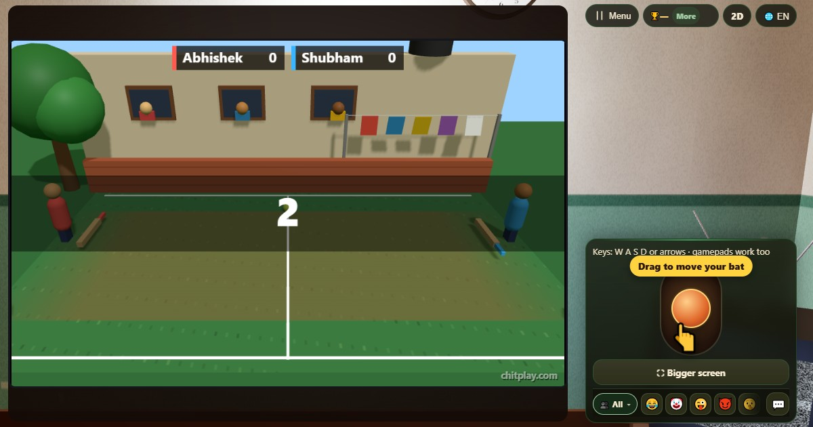

Backyard Rally (Backyard Rally)
- 👥 2 joueurs
- Jeux d'arcade (sur la télé, en 3D)
- 🆓
Guide en français
Raquette et balle dans la cour. L'échange s'accélère ; le premier à sept gagne.
English name: Backyard Rally

Comment jouer
- Déplace ta raquette vers le haut et vers le bas.
- Renvoie la balle. Chaque coup la rend un peu plus rapide.
- Le bord de la raquette renvoie la balle avec un angle plus fermé.
- Si la balle passe ta raquette, l'autre joueur marque.
Points
Un point chaque fois que la balle passe l'autre joueur.
Qui gagne
Le premier à sept points gagne.
Questions fréquentes
Puis-je jouer seul ?
Oui, contre un joueur ordinateur qui perd ses moyens quand l'échange s'accélère.
Quelles commandes puis-je utiliser ?
Les boutons tactiles, W et S, les flèches ou une manette.
Façons de jouer
- En invité: Ni inscription ni connexion. Choisissez un nom et jouez tout de suite.
- Contre l'ordinateur: Quand personne n'est là, des joueurs de l'ordinateur prennent les places libres. Facile, normal ou difficile.
- En ligne: Asseyez-vous à une table publique avec des joueurs du monde entier.
- Entre amis, à proximité: Lancez la partie sur un téléphone et partagez le code ou le QR. Vos amis rejoignent depuis leur téléphone.
- Sur un seul téléphone: Passez-vous le téléphone à tour de rôle : un seul appareil suffit pour toute la famille.
Autres langues
- हिन्दी: बैकयार्ड रैली
- Hinglish: Backyard Rally
- Español: Backyard Rally
- Português: Backyard Rally
- Deutsch: Backyard Rally
- Bahasa Indonesia: Backyard Rally
- Türkçe: Backyard Rally
- Italiano: Backyard Rally
- 日本語: 裏庭ラリー
- 한국어: 뒷마당 랠리
- 中文: 后院对打
- Русский: Дворовый теннис
- اردو: صحن ریلی
- नेपाली: आँगन र्याली
- বাংলা: উঠোন র্যালি
- English: Backyard Rally · Règles complètes (anglais)
Idées de jeux
Tous les jeux


ChitPlay ne comporte ni argent réel, ni paris, ni prix. Les points n'ont aucune valeur.